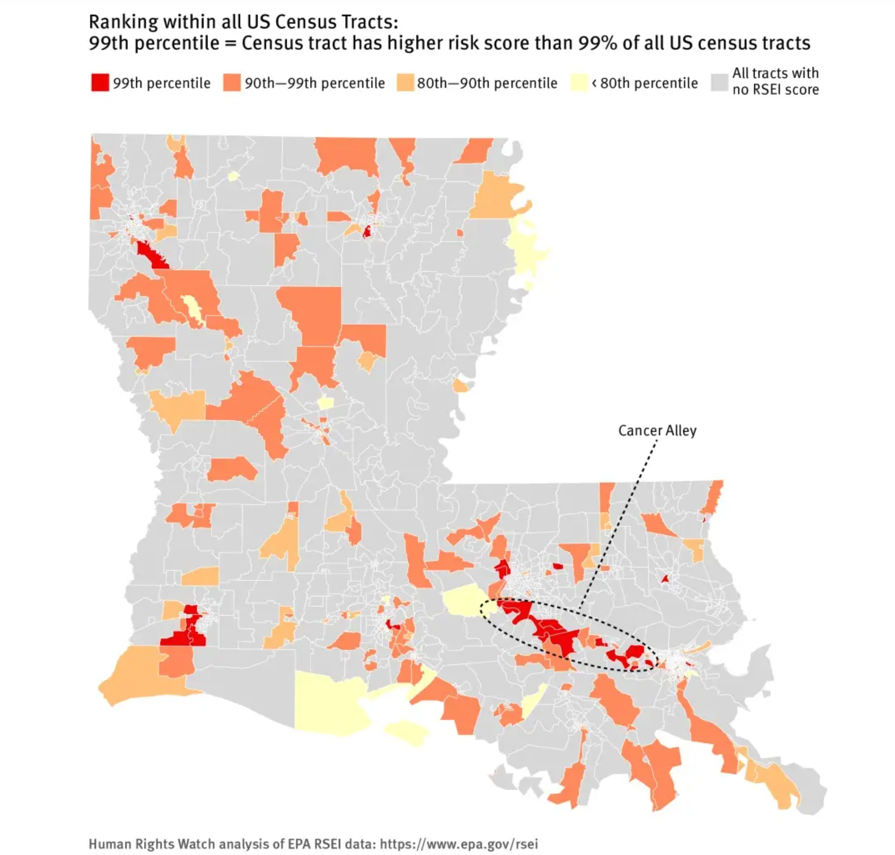
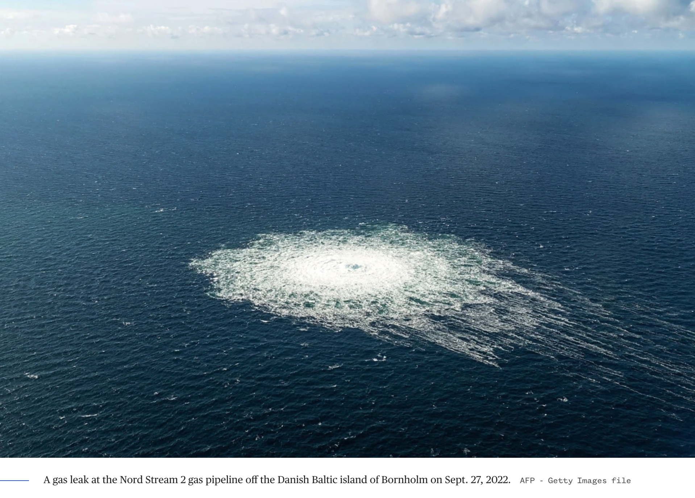

Energy Violence, Environmental Justice: A geographic perspective
Stephen Metts | Pipeline Politics Presentation 03/27/24

Source: Book Description
‘Big’ Energy Analysis Themes
- Energy is Spatial
- Spatial distribution involves relationships between areas (i.e., linkage, corridor, or proximity between zones, clusters, or fragments).
- Energy occurs across, at and within small as well as large scales
- single-source points vs expansive, multi-site grids.
‘Big’ Energy Analysis Themes
- Energy often connects spaces
- Energy vectors connect a series of spaces. The oil and gas industry’s energy vector is usually divided into three major components: upstream, midstream, and downstream.
- Energy is highly uneven
- Benefits and risks, consumption and extraction, concentrations and dispersions, hotspots and blindspots.
‘Big’ Energy Analysis Themes
- Energy is segmented
- Segmentation creates a low regulatory floor for large infrastructure spread across multiple sites.
- Energy occurs over time
- Temporal analysis examines change over time, covering either short or long temporal spans.
‘Big’ Energy Analysis Themes
- Energy includes defined roles, markets, and power differentials
- Producers vs consumers, shippers vs operators, protected vs vulnerable.
{kind=link}
Scale
Scale

Time
Note: Small Scale, Aggregation
Time
Note: Small Scale, Aggregation
20th Century Coal > Oil > Gas
Source: Our World In Data

Source: 20th Century Standard Oil

Source: Million Miles of Pipeline
Proximity - Large Scale
Proximity - Large Scale
Proximity - Large Scale
Note: Co-location, Intensification of risk, Segmentation, Time, Cumulative Impacts
‘book version’ Energy Violence:
The playing field in the fossil fuel industry is rarely level. The concept of energy violence draws attention to repression and disinformation throughout the sector as well as preventable fatalities and systematic practices in specific projects and companies, where decision makers knowingly drive irreversible harm that diminishes the quality of life of groups with less power.
Energy Violence: Scale - Small vs Large
Extraction basins & infrastructure are strategic geopolitical spaces, both within and across localities, regions and continents. Like coal and gas before it, gas dominance today is steeped in energy colonialism. These repressive processes are internal to countries and cross national borders.

Source: Niger Delta - NASA
{kind=link}

Source: Niger Delta Oil Impacts
Source: Canada’s Tar Sands Production
Source: Alex MacLean
{kind=link}
Energy Violence: Intensification

Source: HRW Report 2024
Energy Violence: Intensification

Source: HRW Report 2024
Energy Violence: Large Scale Impact

Source: HRW Report 2024
Energy Violence: Large Scale Impact
Source: HRW Report 2024
Energy Violence: Temporal Fast vs Slow
Proximity to Energy Infrastructure often involves risk - risk of violence. Like climate risk from climate change itself - Energy Violence can be split into acute risks, which translate as fast violence, while chronic risks represent slow violence.

Everyday Fast Violence
Source: February 17th, 2024 - Virginia
Everyday Fast Violence
Everyday Fast Violence
Source: March 13th, 2024 - Pennsylvania
Everyday Fast Violence

Source: March 20th, 2024 - Utah


Source: Nord Stream 2 Explosion
Source: Sentinel 5p
Fixed ‘in place’ Vulnerability - Environmental Justice

Source: EO 12898
Environmental Justice (EJ) Policy EO 12898
…identifies and addresses disproportionately high and adverse human health or environmental effects of its programs, policies and activities on minority populations and low-income populations.
Source: EO 12898
“If you can’t measure it, you can’t manage it.”
In the US, hyper focus on criteria pollutants listed under the National Ambient Air Quality Standards (NAAQS) - six principal pollutants: carbon monoxide (CO), lead (Pb), nitrogen dioxide (NO2), ozone (O3), particulate matter (PM) and sulfur dioxide (SO2) - neglects other toxic elements like hazardous air pollutants (HAPs).
The legal system assumes that the control of regulated pollutants will mitigate unregulated pollutants at the same time. This conserves resources for regulatory agencies yet provides uncertain public health protection due to the toxicity of some chemicals even in trace amounts, as well as variable co-pollutant ratios.
The Proximity of Vulnerable Populations:
A fenceline community or frontline community is a neighborhood that is immediately adjacent to a company, military base, industrial or service center and is directly affected by the noise, odors, chemical emissions, traffic, parking, or operations of the company.
These communities are exposed to hazardous chemicals, high pollution levels, and environmental degradation along with the threat of chemical explosions.
Many fenceline communities are situated in sacrifice zones that are disproportionately inhabited by people of color, Indigenous communities, and the working poor.
Source: Fenceline community
4 Important Questions to ask when Confronting Environmental Justice Issues:
What is the ‘Size’ or ‘Scale’ of both the hazard (environmental violence) and the vulnerable population(s)?
What is the ‘Speed’ of the hazard (environmental violence) - Fast or Slow?
How is a vulnerable population(s) typified? What is the regime of measurement for a vulnerable population(s)?
How is the hazard (environmental violence) measured? How does this measurement relate to its regulatory framework?